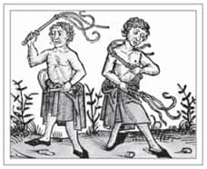
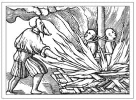
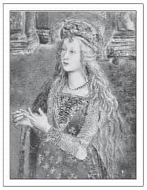
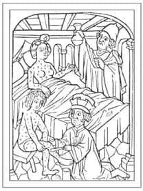
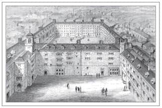

ERMİŞLER VE GÜNAHKARLAR
Gerçektan ahlaklı biri doğal olanda suç bulmaz.
Richard Carlile
Büyük erdemlerin ne olduğu konusu tartışmalı olsa da, Papa I. Gregorius listeyi 6. Yüzyıl’ın sonunda elden geçirdikten sonra Yedi Ölümcül Günah’ın ne olduğuna dair şüphe kalmamıştır: öfke, açgözlülük, oburluk, tembellik, kibir, şehvet düşkünlüğü ve kıskançlık.
Böylelikle 14. Yüzyıl’ın başından itibaren yazarlar, sanatçılar ve genel olarak insanlar günah kavramını takıntı haline getirmişlerdi. Belki de Büyük Veba Salgını’nın getirdiği yıkıma tanıklık edip, ‘ye, iç ve mutlu ol, çünkü yarın öleceğiz’ sözlerinden de ilham alıp, Yedi Ölümcül Günah’a resimlerde ve edebiyatta sıklıkla yer vermişlerdi. Dante de Inferno’sunda bu günahlardan bahsetmişti. Aziz Thomas Aquinas ise günahları tek tek, uzun uzun ele almıştı.
Yedi Ölümcül Günah’ın her birine tekabül eden bir erdem olduğu gibi, her günahkar için -en azından kuramsal olarak- bir de ermiş bulunurdu. Yine de bu iki tür insanı ayıran çizgi oldukça inceydi...
Kutsal Papa
Papa I. Gregorius, M.S. 604’te öldükten kısa bir süre sonra aziz ilan edilmiş ve Büyük Aziz Gregory olarak tanınmıştır. Kendisinden genel olarak ‘Hıristiyan İbadetinin Öncüsü’ olarak bahsedilen bu adam, Roma Katolik ibadetlerini gözden geçirip düzeltmiştir. Bin yıl sonra, 16. Yüzyıl’da, papa karşıtı Protestan reformcu John Calvin bile Gregorius’un son iyi papa olduğunu söylemiştir.
Gregorius’a atfedilen Gregoryen ilahisini bestelediği iddiası pek olasılıklı değildir; ancak Gregorius müzisyenlerin, şarkıcıların, öğrenci ve öğretmenlerin koruyucu azizidir.
Kıldan Gömlek
Ortaçağ’ın ermişleri, ruhla iletişime geçmek için bedenin acı çekmesi fikrini pek benimsemişlerdi. Yapağıdan gömlekler -ya da esas adıyla ‘cilice’ler- keçi kılı yahut başka hayvanların işlenmemiş tüylerinden yapılır ve zarar vermesi için çıplak tenin üzerine giyilirdi. Bu sürekli rahatsızlığın gömleği giyeni ahlaki bir farkındalık içinde tuttuğu düşünülürdü. Bu kıldan gömlekleri daha da rahatsız edici hale getirmek için bazen ince telden kancalar ya da şeritler de eklenirdi.
İrlandalı Aziz Patrick’in her gün bu gömleklerden giydiği söylenirdi ve Thomas Becket, ya da sonraki ismiyle Aziz Thomas, 29 Aralık 1170’de Canterbury Katedrali’nde öldürüldüğü zaman üzerinde bu gömlekten vardı. O zamandan günümüze kalan kayıtlara göre gömülmeye hazırlanırken soğuk kış havasına maruz kalması yapağıdan gömleğindeki pireleri canlandırmış, öyle ki ‘içten içe kaynayan bir kazandaki suyun fokurdaması gibi pireler bütün gömleğin yüzeyini sarmıştır’.
Yapağıdan gömlekler sadece bir aziz kıyafeti olmamıştır. Vakanüvisler birçok prensin ve hatta imparatorun da bu gömleklerden giydiğini yazmıştır. Şüphesiz ki hikayeleri tarihe geçmemiş genel halktan da birçok kişi sırtında yapağıdan gömlek taşımıştır.
İmaparator Şarlman 9. Yüzyıl’ın başlarında bu gömleklerden biriyle gömülmüş ve 1077’de Kutsal Roma İmparatoru IV. Heinrich de, yetkisini sorguladığı Papa VII. Gregorius’tan özür dilemek amacıyla Canossa’ya kadar süren 725 kilometrelik yürüyüşü boyunca bu gömleği sırtında taşımıştır. Gaunt’lu John’un torunu Portekiz Prensi Gemici Henrique 1460’ta öldüğünde bu gömleklerden giyiyordu ve vakanüvis Malmesbury’li William da İmparatoriçe Matilda’nın annesi, İngiltere Kralı II. Henry’nin anneannesi olan Matilda’nın kraliyet elbiselerinin altına genelde yapağıdan bir gömlek giydiğinden bahseder. Ayrıca Matilda’nın Büyük Perhiz döneminde kilisede yalınayak yürüdüğünü ve hastalıklı insanların ayaklarını yıkadığını da yazar.
Ortaçağ Kırbaççıları

Kendilerini kırbaçlayan dindarlar
Yapağıdan gömleklerin verdiği rahatsızlık kırbaççılara yeterli gelmiyordu. Tövbeler ve dualar da. O yüzden bu sofular vücudu rahatsız etme işini bir adım ileriye taşımışlardı. Şevke gelen pek çok kırbaççı kendilerini sokağa atmış, isterik bir kriz içinde kendilerini kırbaçlayıp çamurda secdeye yatmıştır. Bu olaya, ilk defa 1259’da hasat kıtlığı ve açlık döneminin ardından İtalya’nın Umbria bölgesinin Perugia şehrinde tanık olunmuştur.
Bu, özellikle veba salgını ve diğer doğal felaketlerden sonra gelen anlaşılamayan çılgınlık dönemlerinin kıvılcımını yakmıştır. Kırbaççılar beyaz elbiseler giyer, ağır haçlar taşır, kırsallarda dolaşırlar; bazen de etlerini daha iyi kamçılayabilmek için kırbaçlarına çivi takarlardı. Arada sırada kendilerini kırbaçlarken bir yandan da bir şarkı mırıldanırlardı.
13. ve 14. yüzyıllarda Avrupa’da popüler olan kırbaçlama hareketi İngiltere’de pek yayılmamıştır; halbuki Sir Robert Avesbury, 1349’da Büyük Veba Salgını patlamak üzereyken 600 civarı kırbaççının Londra’ya geçit töreni yapmaya geldiğinden söz eder.
Kırbaççılar 14. Yüzyıl’ın sonunda Katolik Kilisesi tarafından kafir olarak tanımlanmıştır ve 15. Yüzyıl’da hareket tekrar canlanır gibi olunca Engizisyon Mahkemesi tarafından çabucak bastırılmıştır.
Her Şey Aşk İçin
Günümüz okurları için Abélard ve Héloïse’nin 900 yıllık hikayesi hem ermişlerden hem de günahkarlardan bir parça taşımaktadır. Onların hikayesi, tutku... Tutku, ihanet ve mahvolmuş âşıkların; ilişkileri yüzünden büyük bir bedel ödeyen âşıkların hikayesidir.
Héloïse, 12. Yüzyıl’ın başında Paris’te yaşayan muhteşem ve güzel bir âlim, aynı zamanda da Notre-Dame Katedrali’nin rahibi Fulbert’in el üstünde tuttuğu yeğenidir. Kendisine emanet edilen bu akıllı genç kadının başarılarını desteklemek isteyen Fulbert, zamanın en parlak ve gözde filozof ve ilahiyatçısı Pierre Abélard’ı onun hocası olarak tutar.
Öğretmenle öğrenci birbirine fazlasıyla alışır. Çok geçmeden Abélard, evinin bakım masrafları ve maddi endişelerinin çalışmalarını sekteye uğrattığı bahanesiyle Fulbert ve Héloïse’nin evine yerleşir. Kaçınılmaz olan gerçekleşir ve birbirlerine âşık olurlar. Abélard’ın yazdığı gibi: ‘Biz önce bir evi, sonra bir bakışı paylaştık.’ Âşıklar, baş başa kaldıkları vakti, sıkı çalışmak yerine gönüllerine göre geçirirler.
Abélard, muhtemelen genç sevgilisinden yirmi yaş daha büyüktü. Buna rağmen, Héloïse’nin onunla aynı derecede akıllı ve tutkulu olduğuna şüphe yok. Zira 1980 yılında gün ışığına çıkan mektuplaşmaları, kendi hayranlığının karşısındakinin ilan-ı aşkından üstün olduğunu kanıtlamaya çalışan iki âşık portresi çizer.
Fulbert bu yasadışı ilişkiyi keşfettiğinde Héloïse çoktan hamiledir. Âşıklar Abélard’ın kız kardeşinin Breton bölgesindeki evine kaçar ve burada oğulları Astrolabe doğar. Abélard Fulbert’e gidip ondan af diler, Héloïse ile evlenmek için de rızasını almaya çalışır.
Hâlâ kızgın olmasına rağmen Fulbert kabul eder; ancak Héloïse, Abélard’ın şanı ve kariyerinin mahvolacağını düşünerek gönülsüz davranır. Zira bir din adamı olarak Abélard’ın evlenmesi kesinlikle yasaktır.
Uzun süre dil döküldükten sonra Héloïse sonunda gizlice evlenmeyi kabul eder. Astrolabe, Abélard’ın kız kardeşine bırakılır ve Héloïse Argenteuil Manastırı’ndaki rahibelerle kalmaya gider ve buradan yazdığı bir mektupta şöyle bir kehanette bulunur: ‘Her şey buraya kadarmış, kör bahtımız kara talihimizin getireceği hüznün, şu ana dek tattığımız aşktan aşağı kalır yanı olmayacak.’
Abélard’ın Héloïse’yi terk ettiğini düşündüğünden olsa gerek, Fulbert bu evlilik hakkında dedikodular yayar; Héloïse ise bu dedikoduları şiddetle inkar eder. Bunun üzerine hikaye olmadık bir yere sapar: Abélard’ın hizmetçisine rüşvet yediren Fulbert ve diğer akrabaları Abélard’ın üzerine onu hadım etmek için görevlendirilmiş kabadayılar salarlar. Aldığı yaralar dayanıksız bir adamı ânında öldürebilecek cinstendir. Ancak Abélard ısrarcıdır ve sevgililer birkaç hafta sonra bekarlık yemini edip dünyadan el ayak çekerler. Abélard St Denis Manastırı’na, Héloïse ise Argenteuil Manastırı’na yerleşir.
Héloïse rahibe olur ve senelerce Abélard’dan uzakta yaşar. Ancak 1120’lerde, Abélard’ın Paris’in hemen dışında kurduğu Paraclete Tapınağı’nda başrahibe olur. İşi sebebiyle başka bir yerde olan Abélard’ın geçmişteki ilişkilerine yaptığı atıflarla düzenli bir yazışma içine girerler. Héloïse ona sıklıkla yazar, aşkının devam eden gücü ve tutkusunu gizlemez.
‘Benim ne ikiyüzlü olduğumu bilmezler,’ der Héloïse. ‘İşlediğim günahlar yüzünden ahlayıp vahlıyor olmam lazım, ancak bir tek kaybettiklerime yanıyorum... Uçarı düşler mutsuz ruhumu öyle bir kavrıyor ki düşüncelerim dualardan ahlaksızlığa kayıyor...’
‘Ben senin içinde sen hariç hiçbir şey aramadım... Ben evlilik peşinde değildim.’
Mektuplarında Héloïse kendini feda eden, idealist ve soylu bir kadındır, ancak aynı zamanda beklenmedik bir kalenderlik ve cüretkar bir haylazlık da sergiler. Abélard’ı sevmekten asla vazgeçmez; belki de hikayelerinin hâlâ anlatılıyor olmasının esas sebebi de budur.
‘Benim için,’ der Héloïse, ‘gençlik, tutku ve muhteşem zevklerin tecrübesi bedenimin çektiği çileyi ve arzularımı artırıyor ve saldırdıkları şey güçsüzleştikçe üzerimdeki yük daha da katlanılamaz hale geliyor...’
‘Eğer tüm dünyanın imparatoru Augustus beni evlilikle onurlandırmayı uygun görse ve bana dünyayı ayaklarıma serse, beni onun imparatoriçesi değil de senin fahişen olarak görmeleri benim için daha değerli olurdu.’
Heyhat, Abélard’ın mektupları onun aynı şekilde hissetmediğini gösteriyordu, belki de kabadayılardan gördüğü muameleyi düşününce böyle olması normaldi. Zamanında hissettiklerine aşkın değil şehvetin yön verdiğini ve bunun bir günah olduğunu yazıyordu. Ona göre ikisi de tutkularını ibadetlerine yönlendirmeliydi. İstediği gibi olmasa da bir ilişki kurma isteği içindeki Héloïse aşkını kalbine gömdü ve Abélard’a sadece onun istediği konularda yazdı. Her zaman olduğu gibi mükemmel bir öğrenciydi ve sonraki yirmi yıl boyunca onu İncil, ahlak prensipleri ve felsefe konularında tartışacaklardı.
Héloïse, Abélard’ın en iyi işlerinin ilham perisiydi; onun sayesinde Abélard yüzyılın en büyük düşünürlerinden biri olmuştu. Bunun karşılığında, Abélard’ın bütün düşünceleri, sırları ve itirafları Heloise’ye yazılmıştı. Son dileği Héloïse’nin yakınında olacağı bir yere gömülmekti.
Abélard’ın bu dileğine kavuşup kavuşmadığı tartışmalıdır. Her ikisinin de Paraclete Tapınağı’na gömülmesi gerekiyordu ancak bu trajik hikayeden çok etkilenen İmparatoriçe Josephine’nin isteği üzerine kabirleri 1817’de Paris’in Père Lachaise Mezarlığı’na taşınır. İki mezarlık da günümüzde bedbaht âşıkların ‘resmi’ ebedi istirahatgahı olduğunu iddia eder. Zavallı küçük Astrolabe’ye ise günümüze kadar ulaşan yazışmalarda sadece bir kere rastlanır: Héloïse’nin isteği üzerine Abélard’ı savunan ve ölümünden sonra günahlarının bağışlanmasını sağlayacak olan Pierre le Venerable, Héloïse’ye yazdığı bir mektupta, oğluna büyük kiliselerden birinde bir iş bulma teklifinde bulunur.
Sıradan Bir Köy Papazı
Montaillou bugün Pirene dağlarının eteklerinde küçük bir köydür. Birçok yönden 14. Yüzyıl’da da aynıydı: 250 kişilik nüfuslu, geleneksel bir köy. Ancak bu küçük köy Katharizm’in -ya da Katolik Kilise’nin yolsuzluklarına karşı çıkan Albililerin sapkınlığının- kalelerinden biri olduğu için Engizisyon Mahkemesi’nin sıkı gözetimi altına girmiştir.
Soruşturmayı, daha sonraları Papa XII. Benedict olacak olan yerel piskopos Jacques Fournier yürütmüş, köylülerinden hayatlarının en özel ayrıntıları hakkında bilgi almıştır. Uzun notlar tutmuş ve Roma’ya döndüğünde bu notları beraberinde götürüp Vatikan Kütüphanesi’ne bırakmıştır. Bu notlar sırf Montaillou’da değil, diğer köylerdeki günlük yaşam hakkında da muhteşem bir bilgi kaynağıdır.
Köy papazı Pierre Clergue köy yaşamına ilişkin aktarımlarda öne çıkmaktadır ve Emmanuel Le Roy Ladurie’nin, Forunier’in kayıtlarından yola çıkarak kaleme aldığı köyün geçmişine ilişkin yazılarda ana karakter olur. Clergue zengin bir köylü aileden gelir ve kendisi de Kathar’dır. Ancak senelerce cemaatin başka üyelerini ispiyonlayarak ve sonuçta kimlerin hapsedileceğine yön vererek kendisini cezadan kurtarır. Ayrıca konumundan istifade edip birçok sevgili edinir. Eğitimli bir adam olarak kadınlara iltifat etmeyi ve hoş görünmeyi iyi bilir; Fournier’in notları, bölgede papazın göz koymadığı pek az kadın olduğunu gösterir.
O dönemde Fransa’nın bu bölgesinde rahipler için bakirlik koşuluna sıkı bir şekilde uyulmuyordu. Oysa Kathar inancına göre, özellikle evlilik içinde, yapılan her türlü seks günahtı. Öyle görünüyor ki ölüm döşeğinde bütün günahlardan arınma fikri Clergue’nin vicdanını bir kenara bırakmasını sağlamış ve onu maceradan maceraya sürüklemişti.
En dikkat çekici sevgililerinden biri varlıklı bir dul ve Montaillou şatosunun sahibesi olan Béatrice de Planissoles idi. Bu dul kadın Clergue’nin kuzeninin tekliflerini geri çevirmişti, ancak kiliseye koşa koşa giderdi, çünkü rahip orada aynı yastığa baş koymaları için yatak hazırlatacak kadar ince düşünceliydi. De Planissoles, Clergue’nin hamile kalmamak için ondan hep bitkilerden oluşan bir kolye takmasını istediğini, ancak karışımın içinde ne olduğunu -muhtemelen diğer sevgilileriyle kullanmasını önlemek için- kendisine hiç söylemediğini anlatırdı.
Clergue’nin kuzeni Grazide Fauré papazın gönlünü fethettiği başka bir kadındır. Grazide on beş on altı yaşında Clergue’nin metresi olur ve onun tavsiyesi üzerine bir sene sonra Pierre Lizier ile evlenir. Grazide ile Clergue arasındaki yasak ilişki birkaç sene daha devam eder. Bu ilişkinin günah olup olmadığı sorulduğunda Grazide bunun günah olabileceğini düşünmediğini, ‘zaten hem Pierre hem ben zevk aldığımız için Tanrı’nın da bundan rahatsız olmayacağını düşündüğünü’ söyler.
Bir başka metres ise Montaillou’da varlıklı ailelerden birinde hizmetçi olarak çalışan Raymone Vital’dir. Kocası da Vital’i başka kadınlarla aldatan bir ayakkabı tamircisiydi ve mutsuz bir evlilikleri vardı. Neyse ki kocası kısa zaman sonra ölmüş ve ona da yeniden evlenme fırsatı çıkmıştır.
Pierre Clergue, bir zıplamış, iki zıplamış ve üçüncü zıplayışta, 1320’de tutuklanmıştır.
Bir süre sonra hapishanede ölmüştür, ancak Engizisyon Mahkemesi’nin önüne çıktığına dair herhangi bir kayıt yoktur.
İlk Kadın Zampara
Béatrice de Planissoles’un Montaillou’lu Pierre Clergue ile kaçamağı iki sene sürmüştür. Bundan sonra kendinden genç ve soylu bir adam olan Dalou’lu Otho Lagleize ile evlenmek için köyü terk etmiş, birkaç da çocuk yapmıştır. Otho’nun ölümü üzerine, Béatrice yine kendisinden yaşça çok küçük olan rahip Barthelemy Amilhac ile birlikte olmuştur. Kaçıp bir tür evlilik merasimi düzenlemişlerdir, ancak ilişki Barthelemy’nin Béatrice’nin Katharlarla olan eski ilişkilerinden dolayı dikkat çekebilecekleri kaygısıyla sona ermiştir. Zira Béatrice’nin babası zamanında Kathar sapkınlığını desteklemekle suçlanmıştı. Nitekim Barthelemy’nin kaygıları haklı çıkmış, her ikisi de tutuklanmıştır.
Béatrice, Jacques Fournier’in ve Engizisyon Mahkemesi’nin önüne çıkıp tanrıtanımazlık, cadılık ve sapkınlık suçlarından yargılanmıştır. Tanrıtanımazlık ve sapkınlıkla ilgili birçok suçlama seneler boyunca dinlemeler üzerinden yapılmıştı; bu konuşmaların kimisi ilk evliliğine kadar uzanıyor ve delil oluşturmuyordu. Ancak çantasının içindekiler büyü ya da büyücülük delili olarak görülmüştü: torunlarına ait iki göbek kordonu ve kızlarının ilk âdet kanamasından gelen kana batırılmış çarşaflar, kocalarına içereceği aşk iksirlerinin hammaddeleri gibi algılanmıştı. Ayrıca baş ağrısını tedavi etmek için buhur ve cinsel gücü artırmak için roka gibi çeşitli bitkiler ve bunun gibi kocakarı ilaçları da bulunmuştu. Fournier bunların çoğunu masum büyüler ve aşk iksirleri olarak görmüştü. Ancak şaşırtıcı olsa da en aleyhte delil, zararsız gibi görünen, ama Kathar sempatizanlığına işaret eden dini bir sembol olduğuna karar verilen bir parça kuru ekmek olmuştu.
Hem Barthelemy hem de Béatrice 1321’in Mart’ından 1322’nin Temmuz’una kadar, bir seneden uzun bir süreliğine hapsedilmişti. Serbest bırakıldıktan sonra Béatrice ceza olarak, sapkın Kathar inançlarını belli etmek için sarı bir haç takmaya zorlanmıştı. Bu, Katharların işledikleri ilk suçlara verilen tipik bir cezaydı. Sapkınlıkta ısrarcı olanlara ise idam cezasına kadar giden daha sert cezalar uygulanırdı.
Engizisyon Mahkemesi
Ortaçağ Engizisyonu öncelikle Katolik Kilise tarafından 12. Yüzyıl Fransası’nda sapkınlıklara karşı savaşmak için kurulmuştu. Özellikle güneyde yaygın olan ve sapkınlık olarak görülen Katharizm’e karşı bir reaksiyondu. İlk Engizisyon Mahkemesi 1184’te Fransa’nın Languedoc bölgesinde geçici bir konsey olarak kurulmuştur. Mahkeme daha sonra kalıcı hale getirilmiş ve Roma’da ve Carcassonne’de Dominikan rahiplerinin idaresine verilmiştir. 1200 yılından sonra her mahkemeye bir rahip başkanlık etmiştir ve suçlanan kim olursa olsun önce mahkemenin önüne çıkarılmış, sonuca göre başkanın önünde yargılanmıştır.
Soruşturmalar, dini inançların yanı sıra, genellikle ahlak dışı davranışlara ve sapkınlık belirtisi olarak cinsel günahlara odaklanmıştır. Cezaların arasında idam (suçlular genellikle bir kazık üzerinde yakılırdı), hapis ve sürgün vardı. Cezaevindekilere ise genelde önce işkence edilmiştir; Papa IV. Innocent’in 1252’deki fetvası sapkınlara karşı işkence kullanımını açık açık desteklemiştir. Bu, istismar edilmeye gayet açık bir sistemdi. Dolayısıyla herhangi birinin aleyhinde çıkan herhangi bir dedikodu ya da bir ipucu mahkemeye çağrılmaları için yeterli olduğundan, düşmanına garez besleyen birinin doğru kişinin kulağına birkaç söz fısıldaması yeterliydi.
İspanyol Engizisyonu

İki Dominikan rahibi sözde Şeytan’la anlaşma imzaladıkları için bir kazığa bağlanıp yakılırken (1549)
Katolik Engizisyonu’nun Ortaçağ’ın sonlarında Avrupa’daki tutuculuğu korumayı hedefleyen en uç örneği İspanyol Engizisyonu’ydu. 1481’de Aragon kralı II. Fernando ve Kastilyalı I. Isabel tarafından kurulan İspanyol Kutsal Engizisyon Mahkemesi şaşırtıcı derecede sağlam çıkmış ve 1834’te II. Isabel’in kararıyla feshedilene kadar o ya da bu şekilde varlığını sürdürmeyi başarmıştı.
Kendinden önceki kurumun aksine İspanyol Engizisyonu Papa yerine İspanyol kralları tarafından idare ediliyordu ve diğer dinlerin mensuplarına özellikle sert cezalar veriyordu. İspanya tam da bu zamanlarda Endülüs’ü Müslüman Mağribilerin elinden almıştı; ayrıca bu bölgede kayda değer bir Yahudi nüfusu da vardı.
Yahudi ve Müslümanlar ya din değiştirmeye ya da göç etmeye zorlanmış, birçoğu sürülmüştü. Protestan olarak suçlananlar suçlu bulunduklarında genellikle yakılırdı. Sevilla’da 6 Şubat 1481’de altı kişi canlı canlı yakıldıktan sonra, auto-da-fe8 yeni hükümetin sıklıkla kullandığı bir yöntem olmuş ve Engizisyon bu zamandan 1530’a kadar oldukça etkin bir hale gelmişti. Mahkemeler 16. Yüzyıl boyunca devam etmiş olsa da Engizisyon bu dönemde daha az baskı uygulamıştır. 16. Yüzyıl’ın son yirmi otuz yılında sadece 200 kişi Protestan olmakla suçlanmıştı. Bu rakam daha önceden suçlanıp idam edilen yüzlerce kişinin yanında çok hafif kalır.
Cadı avcılığı İspanya’da Avrupa’nın diğer yerlerine -özellikle cadılığın büyük bir sapkınlık olarak kabul edildiği Almanya, Fransa ve İskoçya’ya- nazaran daha az şiddetliydi; ancak diğer suçlar Engizisyon Mahkemesi’nin odağındaydı. Doğru yoldan herhangi bir şekilde sapmak günahtı ve günahlar cezalandırılmalıydı. Ruh korumak için bedeni yakmak bile mübahtı.
Tanrı’ya hakaret etmek sık rastlanan bir kabahatti. Dini inançları, cinsel ahlakı ve ahlaksız davranışı kapsardı, din adamları dahil herkes için geçerliydi. Yine de bu suç genelde hafif cezalar alırdı. Muhtemelen boşanmak imkansız olduğu için çok eşli evliliklere sık rastlanırdı. Erkekler için bu suçun cezası beş sene bir kraliyet kadırgasında çalışmaktı, bu da ölüm cezasına eşdeğerdi; kadınlar da sıklıkla suçlanır ve bu durumda genellikle hapse atılırlardı.
Bir papalık emrine göre sodomi yalnızca dini bir sapkınlıkla bağlantılı olduğunda Engizisyon önüne çıkarılabilecek bir suç olmasına rağmen, İspanyol Engizisyonu bu konuda oldukça hassastı. Sodomi hem heteroseksüel hem de homoseksüel ilişkilerde anal seks, tecavüz ve hayvanlarla ilişki anlamına geliyordu. Zaragoza Mahkemesi diğerlerine göre daha sert cezalar veriyordu. 1570’lerde sekiz senelik bir dönem içinde 101 erkeği yargılamış, en az otuz beşini idama mahkum etmiştir. Sodomi sebebiyle yapılan son idam Nisan 1633’te gerçekleşmiştir. Kayıtlara göre Engizisyon toplamda 1000 kişiyi bu suçtan yargılamış, 170’ini yakmıştır; bunlardan 84’ü ise hayvanlarla ilişkiden ceza almıştır.
Borgia Ailesi
Açgözlülük, yolsuzluk, şehvet, cinayet, entrika. Bunların hepsi Borgia ailesinin hikayesinin bir parçasıdır ve ailenin ismi 15. ve 16. Yüzyıllardaki altın çağlarından beri zalimlik ve ahlaksızlıkla eş anlamlı hale gelmiştir.
Borgialar, ya da ilk bilindikleri isimleriyle Borjalar, o zamanlar Aragon Krallığı’na bağlı olan Valencia’dan geliyorlardı. Aralarında adını ilk duyuran, 1455’te yetmiş yedi yaşında Papa III. Calixtus olmadan önce bir hukuk profesörlüğü ve diplomatlık yapmış olan Alfonso’ydu. Zamanın ölçütlerine bakacak olursak, oldukça dürüst bir adam sayılırdı. Yine de, yirmi beş yaşında başpapaz yaptığı yeğeni Rodrigo örneğinde olduğu gibi, kendi ailesinin çıkarlarını her zaman ön planda tutmuştu.
Rodrigo Borgia
Calixtus 1458’de ölünce Rodrigo kısa bir süre içinde yeni papa II. Pius ile birlik olmuş ve Kilise’nin tımar ve arazilerine el koyup gücünü artırmaya başlamıştı. Ayrıca çapkınlıklarıyla şöhret yapmış ve Pius tarafından birkaç defa eleştirilmiştir. Bunun bir etkisi olmamış olacak ki Rodrigo 1492’de Papa VI. Alexander olduğunda en az üç farklı kadından sekiz çocuk sahibiydi.
En yakın olduğu ve kötü namını paylaşan dört çocuğu, uzun süreli metresi Vanozza dei Catanei ile ilişkisinden doğan Giovanni, Cesare, Lucrezia ve Gioffre idi.
Papa olduktan sonra Alexander açık bir şekilde çocukları ve ailesini terfi ettirmeye başlamış, onlara atamalar, topraklar ve mal mülk vermiştir. En sevdiği ve en büyük oğlu olan Giovanni’yi papa ordusunun komutanı, Cesare’yi ise kardinal yapmış ve hanedanlar arası ittifak kurmak adına on iki yaşındaki Lucrezia’yı güçlü Milano ailesinden Giovanni Sforza’yla, Gioffre’yi ise Aragon’lu Sancha ile evlendirmiştir. Anneleri Vanozza’yı Papalık Sarayı’na aldırmış ve daha sonra genç metresi Giulia Farnese’yi Lucrezia ile yaşaması için Vatikan’ın yanındaki bir saraya yerleştirmiştir.
Alexander, Giovanni’nin Napoli tahtını ele geçirmesini istemişse de Giovanni’nin Tiber Nehri’nde ölü bulunmasıyla planları suya düşmüştür. Giovanni’nin gırtlağı kesilmiş halde bulunmuş ve vücudunda dokuz bıçak yarası izi saptanmıştı. Henüz yirmi yaşında olmasına rağmen vahşi ve dengesiz karakteri ve -kardeşi Gioffre’ninki dahil- diğer erkeklerin karılarıyla sürekli aşna fişne yapması ona birçok düşman kazandırmıştı. Baştan beri failin kardeşi Cesare olduğu düşünülmüştür. Zira büyük ihtimalle baldızları Sancha ya da kız kardeşleri Lucrezia’nın gönlünü çelmek için kapışmışlardı. Oğlunun ölümüyle gerçekten mahvolmuş olmasına rağmen Alexander’in bu cinayet yüzünden kimsenin resmi olarak cezalandırılmamasına seyirci kalması ve öcünü almaya çalışmaması ise tuhaf bir hakikattir.
Cesare Borgia
Kardeşinin ölümü Cesare’nin işine gelmiştir, zira bu durum ona en sevilen erkek çocuk ve varis olma konumunu kazandırmış, güç ve varlığı elinde birleştirmesini sağlamıştır. Alexander’i kendisini kardinallikten azat etmesi konusunda ikna etmiş ve kardinal şapkasından feragat eden ilk adam olmuştur. Fransa’ya papalık elçisi olarak gönderilmiş, burada Valentinois Dükü olmuş ve Kral XIII. Louis’in bir akrabası olan Prenses Charlotte ile evlenip bir çocuk yapmıştır. Cesare İtalya’ya geri dönüp Borgia ailesinin papalık devletlerindeki hâkimiyetini artırmıştır.
Venedik büyükelçisi onun hakkında ‘Bütün Roma, Dük tarafından katledilmekten korksun diye her gece dört beş adam, papaz, piskopos ve diğerleri, ölü bulunuyor’ demiştir.
Lucrezia Borgia

Lucrezia Borgia
Giovanni Sforza pek de yararlı bir müttefik ya da iyi bir asker olarak kendini gösterememiştir, dolayısıyla Lucrezia’yla olan evliliği 1497’nin Aralık ayında kocalık görevini yerine getirmediği gerekçesiyle feshedilir. Ancak Lucrezia altı aylık hamiledir ve 1498’in Mart ayında gizlice Giovanni adında bir oğlan doğurur. Bu esrarengiz çocuk üç yıl boyunca gizlenir ve dedikodu malzemesi olur. Infans Romanus ya da Romalı Çocuk olarak da bilinen Giovanni Borgia iki papalık bildirisinin konusu olmuştur; birincisi Giovanni’nin, Cesare’nin gayrımeşru çocuğu olduğunu, ikincisiyse Alexander’in gayrımeşru çocuğu olduğunu belirtir. İki bildiri de Lucrezia’nın çocuğun annesi olduğunu gizleyerek ensest ilişki dedikodularını alevler.
Lucrezia’nın sözde sevgilisi Perotto’nun ölüm emrini Cesare’nin verip vermediği kesin olarak bilinememektedir. Ancak Perotto’nun vücudu 1498 Şubatı’nda, buluşmalarına aracı olan hizmetçiyle birlikte Tiber Nehri’ne atılmıştır. Perotto yalnızca bir hanedan evliliğinin önüne geçmekle kalmamış, aynı zamanda küçük Giovanni’nin babası olduğu yönünde dedikodulara yol açmış ve nüfuzuyla Cesare’yi kıskandırmıştır.
Bir başka siyasi ittifak sebebiyle Lucrezia, Aragon Prensi Alfonso ile evlendirilmiştir. Bu, kısa zamanda Cesare’nin Fransa ile ilişkileri güçlendirmesi planlarının önüne geçmiş ve Napoli krallığıyla aralarında bir yol ayrımına sebep olmuştur. Dolayısıyla Prens Alfonso’nun ayağı tam zamanında kaydırılmıştır. 1500 yılının Temmuz ayındaki bıçaklı saldırıdan kurtulmuş olsa da yaraları iyileşirken boğdurulmuştur. Bütün bunlarda büyük ihtimalle Cesare’nin parmağı vardır.
Lucrezia genelde usta bir zehirleyici olarak resmedilmiş ve Cesare ile olan ensest ilişkisi hakkındaki söylentiler günümüze kadar ulaşmıştır. Son zamanlarda tarihçiler ona daha ılımlı bir gözle, ailesinin entrika ve kandırmalarının bir kurbanı, siyasi planları için kullandıkları bir yem olarak bakmaya başlamıştır.
Ahlaksızlık
Tabii ki ahlaksızlıklar ve aşırılıklar da kayıtlara geçmişti. Ekim 1501’deki Kestane Ziyafeti, Borgia ailesinin namını iyice pekiştirmiştir.
Papalık’ın merasimcibaşısı olan Piskopos Johann Burchard da bir Borgia’ydı ve günlüğüne bu ziyafete elli fahişenin katıldığını ve önce kıyafetleriyle, sonra çıplak olarak dans ettiklerini yazmıştır. Odadakilere mum dağıtılmış ve çıplak dansçıların sürünerek toplamaları için yerlere kestaneler saçılmıştır. Papa Alexander, Cesare ve Lucrezia Borgia bu umumi orjide fahişelerle en fazla ilişkiye giren erkeklere ödül olarak ipekten yelekler, ayakkabılar ve şapkalar sunulmasını seyretmiştir.
Burchard ayrıca üç Borgia erkeğinin olayları Aziz Peter meydanındaki kapalı bir avlunun balkonundan birbirine kızmış azgın beygirler gibi izlediğini ve sonra herkesi yararak hapsedilmiş kısrakların üzerine atladıklarını, bu süreç içinde hem kendilerini hem de kısrakları yaraladıklarını anlatmıştır.
Kısa sayılabilecek ömrünün sonunda frengi yüzünden cildi bozulan Cesare, halk içine çıktığı zamanlar bir maske takmaya başladı. Kötü bir nam salmış olsa da, sınırsız enerjisi ve cesareti sebebiyle takdir edilir, istediğinde etkileyici bir adam olurdu. Cesare farklı eşlerden en az on bir gayrımeşru çocuk babasıydı.
Hikayenin Sonu
1503’ün Ağustosu’nda hem Alexander hem Cesare ateşlenmişti. Cesare iyileşti ancak yetmiş iki yaşındaki papa kurtulamadı. Zehirlenmeden şüphelenilse de büyük ihtimalle ikisi de sıtmaya yakalanmıştı. Roma’nın yazları sıcak ve sağlıksızdı; hastalık kol geziyordu.
Cesare’nin konumu artık güvence altında değildi ve Papa II. Julius ile bir anlaşma yapmaya çalışsa da ezeli düşman olmaktan kurtulamamışlardı. 1507’de Navarre’de bir savaşta kaleyi kuşattıkları sırada öldürüğünde sadece otuz iki yaşındaydı.
Lucrezia üçüncü kocası, Ferrara Dükü Alfonso d’Este ile hayatına devam etmiş ve ondan birkaç çocuk dünyaya getirmiştir. 1505’ten itibaren Ferrara Düşesi olunca sanatçıları himayesine alan biri olarak nam salmış ve ülkede gelişmekte olan sanatçı camiasının önemli bir parçası olmuştur. 1519’da otuz dokuz yaşında ölü doğum yaptığı bir bebeğin yarattığı tıbbi komplikasyonlar sebebiyle hayata gözlerini yummuştur.
Adları ülkede kötüye çıkmış olan Borgia ailesi hayatları boyunca neredeyse kesin olarak birçok şoke edici suçun sorumlusu olmuştur; buna rüşvet, yolsuzluk, hırsızlık, cinayet, zehirleme, tecavüz ve listeyi tamamlamak gerekirse büyük ihtimalle ensest de dahildir. Dindar bir bakış açısından bakmak gerekirse, Alexander’in kurnaz diplomasisi, yönetimi ve tabii ki aldığı maddi önlemlerle papalığın varlığının tehlikede olduğu bir zamanda ayakta kalmasını sağladığı söylenebilir. Zamanın diğer güçlü ve hayasız aileleri gibi, Borgia ailesi de cömert, hayırsever ve sanata katkıda bulunan kimselerdi; onlar olmasaydı Rönesans sanatının muhteşem örneklerinden bazıları da olmazdı.
Borgia ailesinin etkisi 16. Yüzyıl boyunca, her ne kadar az da olsa, devam etmiştir. Kimisi dini ve siyasi pozisyonlarda bulunmuş ve hatta 1510’dan 1572’ye kadar yaşayan Francis Borgia aziz ilan edilmiştir.
Evlilik ve Reform
Martin Luther önemli bir reformcuydu ve Hıristiyanlığın -ve tabii ki Avrupa ve dünya tarihinin de- akışını değiştiren 16. Yüzyıl Protestan Reform hareketinin belirleyicisiydi.
Luther, 10 Kasım 1483’te Saksonya’nın Eisleben kentinde doğmuştur. Üniversite eğitiminden sonra hukuk fakültesine girmiş, ancak ilahiyat ve felsefeyle gittikçe daha çok ilgilenmeye başlamıştır. 1505 yılında Erfurt’ta bir Aziz Augustin tarikatı manastırına girmiş, 1507’de papaz ilan edilmiştir. Beş yıl sonra Wittenberg Üniversitesi’nde ilahiyat kadrosuna katılmıştır. Burada, 1517’de çığır açıcı Endüljansın Kuvveti ve Verimliliğine Dair 95 Tez isimli çalışmasını yazmış, papalık yolsuzluklarını ve af belgelerinin satın alınabilmesini eleştirmiştir. Matbaanın gelişmesi sayesinde, Luther’in yazıları hızla Avrupa’ya yayılmış ve Protestan Reform Hareketi’nin kıvılcımını yakmıştır. Luther daha sonra İncil’i Almanca’ya çevirip Alman kültürü ve diline büyük bir katkıda bulunmuş, ayrıca İngiltere’de Kral James İncili’nin yazılmasına ilham kaynağı olmuştur. Bunun yanı sıra bir de dönemi için devrimci sayılabilecek bir hareketle kilise ibadetlerine eklenecek ilahiler yazmıştır.
Luther, her ne kadar kendisi evleneceğini hiç düşünmese de uzun süreden beri papazların bekaret yeminine şiddetle karşı çıkıyordu. Yine de: ‘Evlenmek aklıma yatmıyor, zira her gün zaten içimdeki sapkının ölmesini bekliyorum.’ Bununla birlikte, 1525’te, uygulamalara tahammülü kalmamış rahibelerin bir Katolik manastırından ringa balığı varilleri içinde kaçmasına yardımcı olduktan iki sene sonra, Luther kaçan rahibelerden biri olan Katharina von Bora ile evlenmiştir.
Görünüşe göre mutlu mesut bir evlilik yaşamışlardır. Luther nikahlarından bir seneyi aşan bir süre sonra ‘Katie’ciğim her şeyde öylesine yardımsever ve memnuniyet verici ki fakirliğimi Karun’un hazinelerine dahi değişmem’ demiştir.
Çiftin altı çocuğu olmuştur, ama bunlardan yalnızca dördü hayatta kalmıştır. Ayrıca dört de yetim çocuğa bakmışlardır. Katharina çiftçilik yaparak ve kendilerine düğün hediyesi olarak verilen Kara Manastır adlı evlerinde ziyaretçi ağırlayarak aile bütçesine katkıda bulunmaya çalışıyordu. Kendisiyle birlikte başka hemşirelerin de çalıştığı bir hastane işletiyordu.
Evlilikte Seks
Martin Luther ve Protestanlık, öğreti ve ibadetlere getirdiği değişikliklerin yanı sıra, evlilik ve sekse yaklaşımı da değiştirdi. Evlilik içinde artık bir günah olarak görülmeyen cinsel ilişkiye çok daha fazla önem verilmeye başlandı. Evlilik, bir iş anlaşmasından ziyade sevgi dolu bir birleşme, hatta kutsal bir görev olarak görüldü. Luther yakın arkadaşı ve kendisi gibi eski bir rahip olan George Spalatin’in evleneceğini duyduğunda çok sevinmiş ve ona bir mektubunda ‘Catherine’nle yatıp ona sarıldığında, ‘Bu insan evladı, bu Tanrı’nın mükemmel yaratığı, bana İsa tarafından verilmiştir. Ona şükürler olsun.’ diye düşünmelisin. Hesaplarıma göre bu mektubu alacağın günün akşamında sen kendi Katharina’nla sevişirken ben de benimkiyle sevişeceğim ve böylece aşkta birleşeceğiz’ demiştir.
Cinsel ilişkiye açık ve dürüstçe değinmek bu zamanlarda gayet normal karşılanıyordu.
Günahın Bedelleri
Ortaçağ’da Avrupa nüfusunu kırıp geçiren veba salgınları aynı zamanda sonucunu düşünmeden zevk peşinde koşmaya da neden olmuş, ölümle yüzleşildiği an cinsel özgürlük ve azgınlığa kaçılmasını tetiklemiştir.
15. Yüzyıl’ın sonunda Rönesans dünyasını kasıp kavuran yeni salgın hastalığa ise farklı yaklaşılmıştır. Bu hastalığın günahkarlığın cezası olduğu düşünülmüş ve çözüm olarak tövbe etme ve dini reform yapma yoluna gidilmiştir.
Frengi

Frengi kurbanlarının bilinen en eski tasviri (1498)
Avrupa’yı 1495’ten itibaren onlarca yıl kasıp kavuran ‘büyük frengi vakası’ bir sifilis salgınıydı. Hastalığın belirtilerine Napoli’yi kuşatma altına alan Fransız birliklerinde rastlanmıştı ve askerler Fransa’ya dönünce hastalığı da beraberlerinde getirmişlerdi. Hastalık resmi olarak Napoli’de 1496 yılında kaydedilmiştir. İki ay içinde Paris’te, yetkililerin hastalığı kontrol altına alma çalışmalarına başlamasına yetecek kadar çok vaka görülmüştü. Ancak bu önlemler hastalığın 16. Yüzyıl’ın sonlarında İngiltere’ye ulaşmasını engelleyemedi.
Frengi başta Kristof Kolomb’un Yeni Dünya’dan dönen denizcilerinin getirdiği, Avupalılar’ın bağışıklığı olmadığı bir hastalık olarak görülmüştü. Çünkü Kolomb ile denize açılan birçok İspanyol tüccarı 1495’te İtalya’ya karşı taaruza geçen Fransız birliklerinde yer almıştı. Yine de frenginin bu denli hızlı yayılması tayfalardan bazılarının Amerika’dan gelir gelmez başka işlerle oldukça meşgul olduğuna işarettir.
Frenginin başlangıcına dair başka teoriler de tıp tarihçileri tarafından tartışılmaktaydı. Kimisi zaten var olan hafif bir hastalığın mutasyona uğrayıp patojenik hale geldiğini söylerken, diğerleri frenginin önceden de var olduğunu, ancak yanlış bir tanıyla cüzzam sanıldığını iddia ediyordu. Dönemin uçuk fikirlerinden biri de frenginin Karayipler’deki yamyamlığın bir sonucu olduğunu iddia eden Francis Bacon’dan gelmiştir.
Bu sırada herkes suçu başkalarının üstüne atmakla meşgüldü: Sifilise Fransızlar ‘Napoli hastalığı’ derken İtalyanlar, İspanyollar ve İngilizler aynı hastalığı ‘Fransız hastalığı’, Ruslar ‘Leh hastalığı’, Almanlar ise ‘İspanyol uyuzu’ olarak tanımlamıştır.
Papa VI. Alexander’in doktoru Pedro Pinto, frengiyi ‘içeriden beslenerek hayati organları mahveden dehşetli alevlere, cildi kirleten lezyonlara ve kabuklu kirlere yol açan müstehcen bir hastalık’ olarak tanımlamıştır. Papa’nın Fransa’da frengi kapmış oğlu Cesare Borgia’yı o tedavi etmiş olmalıydı.
Hastalığa resmi ismi olan ‘sifilis’i, İtalyan şair ve doktor Girolamo Fracastoro vermiştir. Syphilis sive morbus gallicus (Sifilis, yahut Fransız hastalığı) şiirinde bir Yunan köylüsü olan Syphilis, Apollo’yu kızdırdıktan sonra hastalanır, vücudunda ülserler oluşur ve tıp tanrısı Merkür tarafından iyileştirilir.
İster yeni bir hastalık olsun, ister eski bir hastalığın mutasyona uğramış hali olsun, 15. Yüzyıl’ın sonunda hızla yayılan Avrupa’yı kırıp geçiren sifilis salgını oldukça ciddi ve ölümcüldü. 1539’da yayınlanan bu konuyu ele alan bir kitapta Ruy Diaz de Isla Avrupa genelinde bir milyondan fazla insanın öldüğünü yazmıştır.
17. Yüzyıl doktoru İngiliz Thomas Sydenham, Henry Paman’a yazdığı bir mektupta hastalığın bazı daha korkunç belirtilerini en ince ayrıntısına kadar anlatmıştır. Öncelikle cinsel organda küçük kırmızı bir nokta belirir, bunu idrar yolunda bir akıntı takip eder. Acı dolu bir ülser oluşur ve kasıkların lenf düğümünde oluşan şişmeler yahut bubolarla devam eder. Baş ağrıları ve vücudun her yerinde hissedilen acılardan sonraysa bütün vücutta lezyonlar çıkar. Kafatasında, ayrıca kol ile bacak kemiklerinde yumrular ve mukoza zarı oluşur; tümörler, yumuşak dokuları ve kıkırdakları, özellikle de burnu yok etmeye başlar. Aynı dönemlerdeki birçok diğer tanım da hastalığı kapmış kişilerin vücudunun kafadan dize kadar kokan, irinli lezyonlarla kaplandığını, etlerinin yüzlerinden soyulmaya başladığını yazar.
Thomas Sydenham’ın yazdığı sıralarda hastalık öldürücülüğünü biraz da olsa yitirmişti. Bunda büyük ihtimalle iyileştirilmiş hijyen ve hayat standartlarının ya da toplumun bağışıklık kazanmasının da payı vardır. Ancak bu durum başka sorunlara sebep olmuş, hastalığın belirtilerinin gizli kalmasını kolaylaştırmıştır. İnsanlar hastalık kaptıklarının farkına varamamış ve ilk lezyon yok olup sifilis pasif hale geçtiğinde birçoğu iyileştiğini sanmıştır. Hastalık dolayısıyla cinsel partnerlere ve anne karnındaki çocuklara geçmiş, birçok sağlık sorunu ve vücutta deformasyona sebep olmuştur.
Genelevlerin Kapatılması
Belsoğukluğu ve diğer hastalıkların yayılmasının suçlusu olarak genellikle seks ticareti gösterilmiştir, ancak bu yeni salgının dehşeti ve büyüklüğü genelevlerin kapatılması için çağrıların yayınlanmasına ve yeni bir ahlaki düzen taleplerinin yükselmesine sebep olmuştur. Ne var ki, getirilen düzenlemelerin hiçbiri fuhuşu azaltmayı başaramamıştır. Aksine, genelevlerin kapatılması sadece kadınların işlerini sokaklara taşımasına yol açmış, böylece sorunu daha da perçinlemiştir. 1490’da resmi kayıtlar Roma’da 7.000, Venedik’te 11.000 fahişe olduğunu gösterir; yeni kanundan sonra da bu sayılar değişmemiştir.
İngiltere’de, VII. Henry bütün büyük şehirlerdeki genelevleri kapattırmaya çalışmıştır. Elizabeth dönemi tarihçisi John Stow’un yazdığı Londra Anketi’ne göre, Londra’nın Bankside (Thames Nehri kıyısı) bölgesindeki ‘The Crane’ (Turna), ‘The Bell’ (Çan), ‘The Cardinal’s Cap’ (Kardinal’in Başlığı) ve ‘The Swan’ (Kuğu) gibi isimlerle örtbas edilen ‘kerhaneler’, kısa bir süre için kapatılmış ancak kısa zamanda tekrar açılmıştır. Ama kadınların birçoğu şehrin ve banliyölerin sokaklarına dağıldığı için evde çalışan fahişelerin sayısı azalmıştır.
Ahlak Bekçisi VII. Henry
Cinsel özgürlüğü kısıtlayan en katı iki kanunu çıkaran kral, VII. Henry’nin oğlu VIII. Henry’ydi. Bu kanunlardan ilki, parlamentodan Henry’nin genel sekreteri Thomas Cromwell’in baskılarıyla geçirilen 1533 Sodomi Kanunu’dur.
Sodomi anal seks, ensest, hayvanlarla ilişki ve hatta cadılığı da kapsayan, doğal olmayan bir cinsel birleşme biçimi olarak tanımlanmıştı. Kanun herhangi bir görenek dışı cinsel birleşmeyi kapsıyordu ve VIII. Henry ile Tudor hanedanı üyeleri bu kanunu birçok düşmanlarına karşı bir silah olarak kullanabiliyorlardı. Sodomi krala karşı işlenmiş bir suç olarak sayılıyor, ölüm ve dini usüllere uyulmaksızın defnedilmeyle cezalandırılıyordu. Bu kanun 19. Yüzyıla kadar kanunnamelerdeki yerini korumuştur.
Daha sonra, 1546’nın Nisan ayında, VIII. Henry Londra’nın genelevlerinin ve krallığındaki bütün ‘fuhuş evleri’nin kapatılmasını emretmiştir. Genelevlerin derhal kapatılması gerektiğine dair bir ferman yayınlanmış, kanun sokaklardaki tellallar tarafından duyurulmuştur. Köpek dövüşü ve ayı avlama gibi ortaçağa dair halk eğlencelerine de derhal son verilecektir.
Kanun, amacının ‘genelev denilen halka açık alanlarda türeyen bu ahlaksız ve zavallı insanlara ceza verilmemesine ya da bu berbat ve tiksindirici günahlarının düzeltilmemesine göz yumulmasına bir son vermek’ olduğunu ilan eder. Tabii ki, geneleve gitmeyen Henry’nin ‘Winchester kazları’ ismini verdiği bir grup kadının muamelesinden pek hoşlandığı düşünülecek olursa bunun oldukça ikiyüzlü bir kanun olduğu görülebilir. Birlikte olduğu kadınları çoğunlukla eski Winchester Papazı, 1553’te sifilisten ölen Başpiskopos Stephen Gardiner’in seçtiği söylenir. Henry’nin sonraları başgösteren sağlık sorunlarının, iktidarsızlık nöbetlerinin ve güçlü bir erkek vâris dünyaya getirememesinin sebeplerinin sifilis olup olmadığı tartışmalıdır.
Avrupa’nın her yerinde olduğu gibi, burada da kanunlar pek de etkili olmamıştır; aslına bakılırsa yasaklamalar durumu daha da kötüye götürmüştür. Kamu ahlakının kontrol altına alınması, fahişelerin meyhanelerle hanlara yönelmesi sebebiyle iyice zorlaşmıştı ve bu alandaki ticareti daha da yaygınlaşmıştı. John Stow’un sözünü ettiği en azından iki genelev 16. Yüzyıl’ın ilerleyen dönemlerinde, Shakespeare’in zamanında da varlığını sürdürmüştür. Kılık değiştirmiş olsalar da tabelaları hâlâ göz önünde olan ‘Cardinal’s Cap’ ve ‘The Bell’ gibi genelevler bazı tiyatrolara pek yakındı ve oyuncu ile seyircilerin sıklıkla gittiği yerler arasında yer alıyordu.
Bridewell

1667’de Londra Bridewell Hapishanesi
Ancak kamuoyunun yargıları değişiyor ve tavırlar sertleşiyordu. Bazı yerlerde adı çıkmış fahişeler dışlanmış ve geri gelmeye cesaret ederlerse kırbaçlanmakla, teşhir edilip damgalanmakla tehdit edilmişti. Cinsel suç işleyenlerse suçlarının bir simgesi olarak özel bir sarı yeşil tasma takmaya zorlanıyordu.
Birçok şehirde yetkililer fahişeleri düzenli olarak kırbaçlar ve saçlarını kazıdıktan sonra onlara çürük sebze atan ve tencere tava çalan halkın gözleri önünde yerlerde sürüklerlerdi. Tören halinde gerçekleştirilen bir başka aşağılamaysa suçluların halka açık kırbaçlama yerlerine götürülmesi ve gece boyunca burada boyunduruğa bağlı tutulmasıydı. 1550’de Londra’nın belediye başkanı Lord Rowland Hill namussuzlukla suçlanan herkesi, varlıklı yurttaşları dahi şehir içinde teşhir edilme cezasına çarptırmıştır.
En kötüsüyse Londra’daki fahişeler, ahlaksızlar, serseriler ve hırsızlar için tasarlanan ilk ‘ıslah evi’ olan Bridewell’di. Thames Nehri kıyısında Blackfriars Köprüsü’ne yakın, Hampton Court Sarayı tarzında inşa edilen Bridewell, başta VIII. Henry’nin saraylarından biriydi. 1552’de oğlu VI. Edward suçluların ıslah edilmesi için burayı şehre armağan etmiştir.
Gerçek bir ceza hükmü yoktu ve tutuklular bir kere içeri girdiler mi biri onları kurtarana kadar orada kapalı kalırlardı. Hapishane ile ıslahevi karışımı bir yer olan Bridewell kelepçe, boyunduruk, kenevir sapı kırmak için kalıplar ve çarklarla doluydu. Ağır iş yapamayacak kadar zayıf olanlar ise döşek yapardı. Daha şanslı olan diğerlerine ise nasıl mısır unu ya da nal yapılacağı öğretilirdi.
Ancak cezalar oldukça caniceydi; özellikle de kadınlar için. Düzenli olarak yöneticilerin önünde kırbaçlanırlar ve dayak, aç bırakma ve hatta toplu tecavüze maruz bırakılırlardı.
Örnek bir ıslahevi olarak ‘Bridewell’ ülkenin farklı bölgelerindeki benzer kurumların da adı olmuştur.
8 Auto-da-fe: İspanyol ve Portekiz Engizisyonları tarafından verilen cezanın halkın önünde infazı. (e.n.)